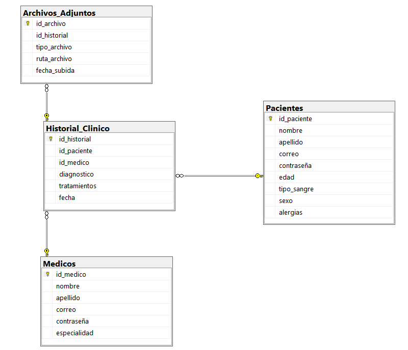

Diagrama de la Base de Datos

Descripción de la Arquitectura de la Base de Datos
La base de datos del subsistema de historial clínico está diseñada para almacenar y gestionar la información
relevante de pacientes, médicos y su historial médico. La arquitectura se compone de las siguientes tablas:
- Pacientes: Almacena información personal de los pacientes, como nombre, apellido, correo,
y datos médicos relevantes.
- Médicos: Contiene datos sobre los médicos, incluyendo su especialidad y datos de contacto.
- Historial Clínico: Registra diagnósticos y tratamientos de cada paciente, enlazando tanto a
pacientes como a médicos mediante llaves foráneas.
- Archivos Adjuntos: Permite almacenar documentos y archivos relacionados con el historial clínico.
Funcionalidades del Subsistema
Esta estructura de base de datos permite implementar diversas funcionalidades para los usuarios del subsistema:
- Registro de Pacientes: Los usuarios pueden añadir nuevos pacientes y su información médica.
- Consulta de Historial Clínico: Permite a los médicos acceder a la información médica de los pacientes
de manera rápida y eficiente.
- Gestión de Tratamientos: Los médicos pueden registrar diagnósticos y tratamientos, asegurando que la
información esté actualizada.
- Subida de Archivos: Los usuarios pueden adjuntar documentos relevantes al historial clínico de cada paciente.
La relación entre las tablas garantiza la integridad de los datos y permite realizar consultas complejas de manera eficiente.
Esta arquitectura es fundamental para el funcionamiento del subsistema, mejorando la calidad de la atención al paciente.